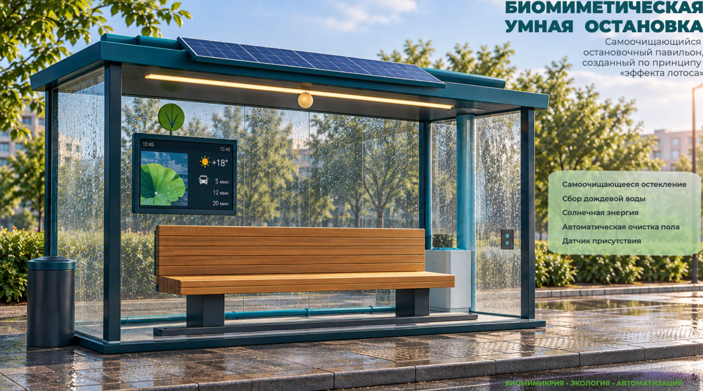
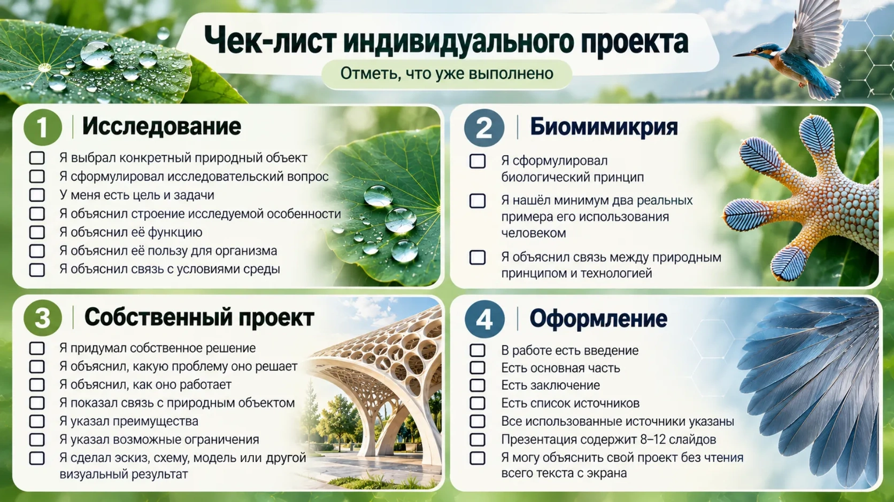

Брагина Анастасия Егоровна
Индивидуальный проект
Биомимикрия
как применение биологических принципов в современном дизайне
Руководители проекта
Николаенко
Татьяна Александровна
природный объект→особенность→биологический принцип→существующее применение→собственная идея
01
Введение
Что такое этот проект?
В природе существуют решения, которые сформировались в процессе эволюции и позволяют организмам эффективно передвигаться, защищаться, сохранять тепло, получать и распределять воду, выдерживать нагрузки, прикрепляться к поверхностям, уменьшать сопротивление среды и экономно использовать энергию.
Биомимикрия — направление, в котором человек изучает природные решения и использует их принципы при создании технологий, материалов, конструкций и объектов дизайна.
Ваша задача — исследовать природное решение и попробовать перенести его принцип в собственный проект.
Пример: лист лотоса → особая поверхность → вода и загрязнения плохо удерживаются → самоочищающиеся покрытия → собственная концепция покрытия.
02 · Маршрут проекта
Что именно нужно сделать?
1
Выбрать природный объект
Один конкретный природный объект, который вам интересен
2
Исследовать его
Строение, интересующую особенность, её функцию, пользу и связь со средой
3
Сформулировать биологический принцип
Какой принцип, обнаруженный в природе, может быть полезен человеку?
4
Найти реальные примеры
Не менее двух примеров из архитектуры, инженерии, дизайна, материалов или технологий
5
Разработать собственную идею
Объект, конструкцию, материал или дизайн, использующий исследованный принцип
6
Создать визуальное представление
Эскиз, схема, цифровой макет, 3D-модель, технический рисунок, коллаж или цифровой прототип
7
Представить результат
Визуальный продукт + презентация + горизонтальная видеозащита
03 · Выбор темы
Как выбрать тему?
Выберите один природный объект и одну конкретную особенность. Не следует выбирать слишком широкую тему.
Слишком широко: «Биомимикрия животных»
Лучше: «Как строение лап геккона может использоваться при создании новых систем крепления?»
04 · Банк идей
Возможные объекты
лист лотосакактуспчелиные сотыкожа акулылапы гекконакрылья птицраковины моллюсковдревесные структуры
Более сложные темы — терморегуляция, колонии насекомых, движение организмов, механизмы защиты растений — рекомендуется согласовать с учителем.
05—08 · Исследовательская часть
От вопроса к биологическому принципу
05Исследовательский вопрос
Один главный вопрос, связанный с объектом и исследуемой особенностью.
06Цель
Что вы хотите выяснить и создать в результате проекта?
07Задачи
Сформулируйте 6–7 задач и адаптируйте их под выбранную тему.
08Исследование
Строение, функция, польза, эффективность, связь со средой и переносимый принцип.
Шаблон цели: Исследовать [биологический объект/особенность], определить лежащий в его основе биологический принцип и разработать собственное дизайнерское или технологическое решение на основе этого принципа.
09 · Источники
Поиск информации
Используйте учебники, научно-популярные и научные статьи, сайты университетов, музеев, научных и образовательных организаций, материалы о современных технологиях.
Минимум 5 источников. Не стройте исследование только на одном сайте.
10 · Искусственный интеллект
ИИ — помощник, а не источник фактов
ИИ можно использовать для поиска идей, объяснения терминов, составления плана, языковой обработки и поиска направлений исследования.
Важно: фактическая информация должна быть проверена по источникам. Не выдавайте автоматически созданный текст за собственное исследование.
11–13 · От природы к прототипу
Технологии и собственное решение
11
Изучите существующие технологии
Найдите минимум два реальных примера и объясните связь технологии с природным принципом.
12
Придумайте собственное решение
Это не обязано быть изобретением мирового уровня. Главное — осмысленный перенос принципа в новую область.
13
Опишите разработку
Название, проблема, природный аналог, принцип, решение, работа, преимущества и ограничения.
14 · Визуальная часть
Покажите, как идея работает
эскизсхемацифровой макет3D-модельтехнический рисунокколлажцифровой прототип
Физический макет НЕ является обязательным. Его можно сделать дополнительно.
Пример проектного решения
Биомиметическая умная остановка
Для примера выбран лист лотоса. Его поверхность обладает выраженными водоотталкивающими свойствами: капли воды плохо удерживаются на ней и, скатываясь, могут уносить частицы загрязнений.
Мы изучили эту особенность, определили принцип самоочищения поверхности и посмотрели, где похожие решения уже применяются человеком.
После этого появилась собственная идея — остановка с самоочищающимся остеклением и поверхностями по принципу эффекта лотоса.
Примеры продукта
1) Цифровой макет продукта

15 · Сдача
Что необходимо сдать?
- Визуальный результат — эскиз, схема, цифровой макет, 3D-модель или другой согласованный продукт
- Презентация — 8–12 слайдов
- Видеозащита
16 · Защита
Как проходит защита?
Формат:
горизонтальное видео
горизонтальное видео
Время:
5–7 минут
5–7 минут
Назовите тему, сформулируйте исследовательский вопрос, расскажите о природном объекте, объясните биологический принцип, покажите существующие применения, представьте собственную разработку и сделайте вывод.
17 · Финальная проверка
Чек-лист ученика перед сдачей
